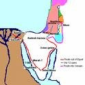

En el Principio...

Adán y Eva
El nombre del primer libro de la Biblia, Génesis, significa comienzo. Los dos primeros capítulos de Génesis nos dicen que Dios creó el universo: las estrellas, la tierra, y cada ser vivo que es o alguna vez fue. La creación más especial de Dios fue el ser humano: las personas. Las personas son especiales porque son creadas a la imagen de Dios. (Se refieren a Génesis 1:26-27)

El tercer capítulo de Génesis cuenta la historia de cómo el pecado entró en el mundo. Adán y Eva, el primer hombre y la primera mujer, fueron tentados a creer que Dios les mintió. Al creer esa mentira, estaban convencidos de que podrían ser como Dios. Cuando Dios vio que habían sido desobedientes, que Adán y Eva ya no gozaran de la misma relación abierta con Dios que habían disfrutado antes; el pecado los había separado de Dios. Y así ha sido, para todas las personas, excepto Una, que ha vivido desde entonces: todos estamos separados de Dios por el pecado.

Los capítulos cuatro y cinco de Génesis dicen la triste historia de la creciente maldad de la humanidad. Dios todavía no había dado su mandamientos de la forma correcta de vivir a los hombres, y la gente sólo hacía lo que quería hacer, no importa lo malo que era. Todos los de la civilización fueron sumidos en la violencia y la inmoralidad de todo tipo. Cuando Dios vio la triste condición de Su máxima creación, lamentó que él había creado seres capaces de tal comportamiento.

Noé
Mientras Dios desdeñaba su creación pecadora, encontró un hombre que caminaba con el Señor: Noé. Dios decidió destruir la humanidad y empezar de nuevo con Noé y su familia. Los capítulos nueve a once de Génesis nos cuentan cómo Dios destruyó toda la humanidad con un diluvio, salvando solo a Noé y su esposa y sus tres hijos con sus respectivas esposas.
Los capítulos nueve a once de Génesis nos cuentan la historia de cómo la tierra fue repoblada después del diluvio por los hijos de Noé, Sem, Cam y Jafet. Al final del capítulo once, se nos presenta un hombre muy especial, un hombre al que Dios llamaría para ser el padre de un pueblo al que podríamos llamar suyo.

Abraham
En Génesis, la Biblia nos habla de un número de personas que "caminaron con Dios," como Noé. Caminando con Dios requiere la fe: una creencia incuestionable de que Dios hará lo que promete . Noé necesitó mucha fe para creer que Dios iba a destruir toda la población de la Tierra con un diluvio y siguió las instrucciones de Dios para construir el arca (un gran barco), cuando la gente lo ridiculizaban mientras trabajaba. En el capitulo doce de Génesis, aprendemos de otro hombre de quien Dios exigio una gran fe: Abraham.
Dios exigió mucho de Abram (Dios más tarde cambió su nombre a Abraham): Él le pidió a Abraham que dejara su tierra natal y se trasladara a un lugar que nunca había visto, donde no conocía a nadie. Por su obediencia, Dios le hizo dos promesas a Abraham:
- le dijo que le otorgaría la tierra de Canaán (lo que ahora llamamos Israel) a Abraham y a sus descendientes
- le dijo que una gran nación surgiría a partir de los descendientes de Abraham
En la mente de Abraham, tantas promesas debían haber parecido imposible. La tierra de Canaán ya pertenecían a otro conjunto de personas, y Abraham y su esposa no tenía hijos. Y la esposa del Abraham, Sara, era demasiado mayor para tener hijos. Sin embargo, Abraham tenía fe, y así fue como toda su familia partieron hacia Canaán.
Si usted lee la historia de Abraham en los capítulos doce a veintitrés de énesis, verá que la fe de Abraham no era del todo perfecta: a veces él "tomó las cosas en su propias manos," en lugar de esperar a Dios y Su calendario. Aunque a veces Abraham dudaba de Dios, como leemos en Génesis 15:6, "Abram creyó al Señor, y Él se lo reconoció como justicia."
A pesar de no ser fácil, y de que no podamos entender el camino, Dios nos invita a tener fe en Él.

Tal como Dios había prometido, Sara tuvo un hijo; ella le llamó Isaac. Sara se alegró de que Dios le dio a ella un hijo, aún en su vejez.
Cuando Isaac creció y se casó, él se convirtió en el padre de dos hijos, Jacob and Esaú. (Génesis 25:19-Génesis 30)
Jacob tuvo doce hijos (se puede ver una lista de sus nombres en Génesis 35:23-26). Los nombres de los hijos se convertirían en los nombres de las doce tribus de Israel. (Más tarde, Dios cambió el nombre de Jacob por el de Israel−−Génesis 35:10.) A través de estos doce hijos, Dios cumplió su promesa a Abraham de crear una gran nación a través de él.

José con el Faraón
Moisés
Uno de los hijos de Jacob, José, fue a Egipto y se convirtió en un oficial en la corte del Faraón (puede leer sobre ella en Génesis 37-50; es una larga historia, pero es toda una aventura). Con el tiempo, todos los once hermanos de José se trasladaron a Egipto también. Mientras José vivía, su familia vivío bien gracias a su conexión con el Faraón.
Después de la muerte de José, nacieron nuevas generaciones de Judios, y un nuevo Faraón que llegó al poder. Él no sabía que José había sido favorecido por la familia real. Este nuevo Faraón vio que los Judios (los Israelitas fueron también conocidos como los Judios o el pueblo Judío) habían aumentado considerablemente en número. Esto le hizo temer que pudieran derrocar su gobierno. Por lo tanto, todos los Israelitas (Judios) fueron mandados para ser esclavos en Egipto.

En Éxodo 2:23, la Biblia nos dice que los Israelitas sufrieron enormemente como esclavos de Egipto. Ellos pedían a Dios para que los rescatara, y Dios los escuchó. Eligió a un hombre entre los Judios para ayudar a liberar a Israel de la esclavitud. Ese hombre se llamaba Moisés.
A diferencia de Abraham, que obedeció la llamada de Dios, Moisés trató de convencer al Señor que empleara a otra persona. (Éxodo 4:1-14) Dios le mostró a Moisés que sería Dios, no Moisés, quien en realidad forzaría la mano del Faraón para liberar a los esclavos judíos. Moisés simplemente sería el mensajero de Dios.
En Egipto, se adoraba a muchos dioses−−ídolos−− y no el Dios de Abraham, Isaac y Jacob. Cuando Moisés se acercó al Faraón por primera vez (Éxodo 5), el Faraón se burló: "¿Quién es el Señor, para que yo le obedezca?"
Moisés regresó al Faraón con una segunda petición para que el Faraón liberara a los esclavos judíos. Esta vez, sin embargo, Moisés llevó consigo una advertencia de Dios: si no estaba de acuerdo en liberar a los Israelitas, Dios desataría una serie de diez plagas sobre Egipto: plagas que traerían la destrucción, las enfermedades y la oscuridad. Sorprendentemente, incluso después de los efectos terribles de todas estas plagas, el Faraón siguió negándose a creer en el poder de Dios y no quiso liberar a los Judios. (Éxodo 7:15-Éxodo 11)
Fue sólo después de la décima plaga (Éxodo 12) cuando el Faraón finalmente aceptó darles la libertad a los esclavos de EgiptoEl hijo primogénito de cada familia Egipcia sería asesinado. Sin embargo, Dios iba a salvar a los hijos primogénitos de los Judios. Él Ordenó cada familia judía que sacrificara un cordero y pintaran su sangre sobre las puertas de sus hogares. Cuando el ángel de Dios vino a matar a los hijos primogénitos, pasó por encima de las casas de todos que habían seguido las instrucciones de Dios con la pintura de la sangre del cordero sobre las puertas de sus casas.
Hasta el día de hoy, los Judios celebran la fiesta de la Pascua cada año para conmemorar el milagro que les ayudó a liberarse de la esclavitud.
Bajo el liderazgo de Moisés, los Judios comenzaron su viaje de salida de Egipto. Incluso después de todo lo que había sucedido en Egipto a la mano de Dios, el Faraón intentó, por última vez, mantener a los Judios en la esclavitud
El ejército Egipcio persiguió a los Israelitas hasta el Mar Rojo, pensando que los tenía atrapados en el ague. (Éxodo 14). Los Israelitas empezaron a entrar en pánico, pero Moisés les instó a tener fe en su Dios. Dios mandó a Moisés que levantara su bastón junto al agua. Milagrosamente, las aguas del Mar Rojo se divideron en dos, creando un camino de tierra seca que les permitió cruzar al otro lado del mar. Cuando el ejército del Faraón trató de cruzar por el mismo camino, las aguas del mar cayeron de ambos lados, ahogando a todos. Por fin, el pueblo de Israel estaba fuera de Egipto y estaban libres de la esclavitud.
¡Y, tal como Dios había dicho a Moisés cuando lo llamó por primera vez, fue la poderosa mano de Dios que lo logró todo!
Los Diez Mandamientos
Como hemos visto en la historia del Gran Diluvio, Dios aún no había entregado sus leyes al pueblo. Cuando los Judios comenzaron a encaminarse hacia la tierra que Dios había prometido a Abraham y a sus descendientes, Dios dio instrucciones a Moisés para que subiera a la cima del monte Sinaí. Allí, con la montaña cubierta de humo para proteger la gente de la inmensa gloria de Dios, Moisés recibió los mandamientos de Dios para Su pueblo. (Éxodo 20:1-17)

El hecho de que los Judios ya no estaban en condiciones de servidumbre en Egipto, no significaba que todos sus problemas se havían eradicado. ¡La historia de su viaje a la tierra que Dios les había prometido abarca un período de cuarenta años!
La fe de los Israelitas era débil; a menudo dudaban de que Dios les proveería. ¡A veces se desanimaban tanto que incluso hablaban de volver a Egipto! Y, quizás lo peor de todo, crearon ídolos para adorar porque dudaban tanto de Dios.
La historia de la muerte de Moisés se registra en el capítulo 34 del Deuteronomio. Es en el libro de Deuteronomio donde Dios expande sobre las leyes que había entregado a Su pueblo en el Monte Sinaí. Él describe cómo la gente debía comportarse entre sus compañeros judíos y cómo debían adorar a Dios.